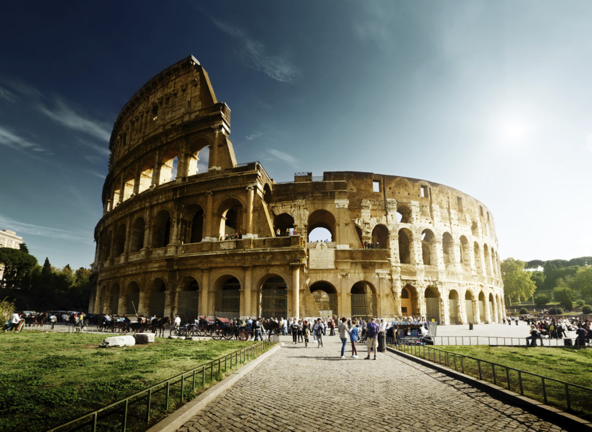
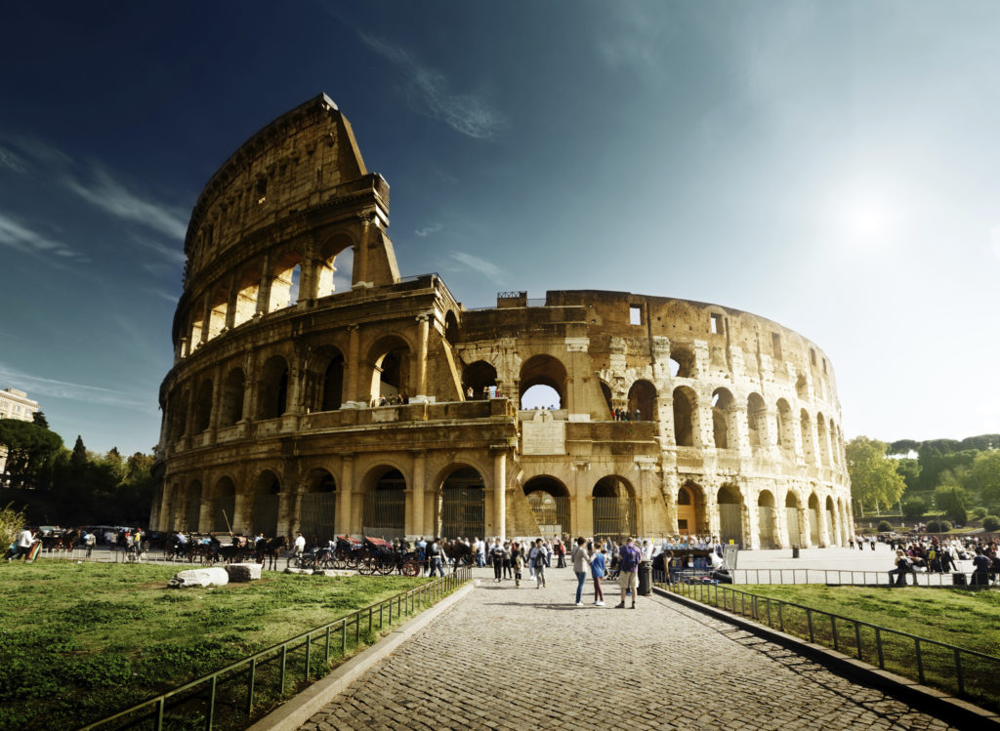

Inaugurado en el 80 d.C., el Coliseo fue utilizado para gladiadores, espectáculos y eventos
públicos durante el Imperio Romano.
Es un ícono de la ingeniería romana y un símbolo de la cultura y el entretenimiento
en la antigua Roma.
Fue declarada una de las nuevas maravillas del mundo el 7 de julio de 2007, en una ceremonia celebrada en Lisboa, Portugal.
 
